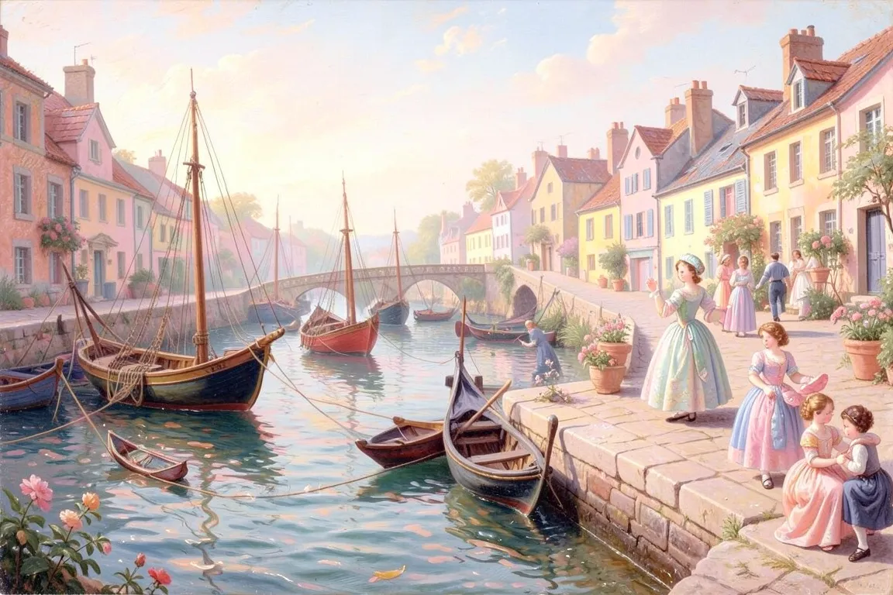

живопись · 1720–1780 · также: Позднее барокко, Стиль Людовика XV
Лёгкие игривые картины любви, досуга и орнамента в бледных пастельных цветах и изогнутых линиях. Тяжесть и драма барокко уступают очарованию, близости и мягкому пуховому прикосновению.

Главная идея
Картина должна дарить удовольствие: это утончённая лёгкая интимная вещь, которая радует глаз, а не проповедует и не подавляет.
Принципы дизайна
Стройте макет на S-образных и C-образных кривых и ведите главную линию длинной ленивой диагональю из угла в угол.
Задавайте палитру бледным пастельным рядом: розовый, пудрово-голубой, кремовый, мягкий зелёный и золото, с 70% площади светлее значения 60%.
Пишите небольшие интимные сцены 0,5–1,5 м: влюблённые, качели, будуар, праздник в саду.
Окружайте фигуры мягкими листвяными и облачными массами, обрамляющими их, как раковина.
Держите краску тонкой, а касание лёгким: пуховые мазки 2–8 мм с видимым быстрым взмахом в листве.
Освещайте картину высоким мягким золотистым источником со слабыми тенями, остающимися тёплыми и бледными.
Добавляйте орнамент: ленты, цветы, раковины и позолоту малыми дозами у края фигуры.
Антипаттерны
Тяжёлый тёмный фон и сильная светотень
Торжественные, героические или религиозные сюжеты с моралью
Жёсткие прямые архитектурные линии и строгая симметрия
Глубокий насыщенный основной цвет
Грубая, толстая или драматичная работа краской
Большие монументальные фигуры, заполняющие картину